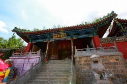
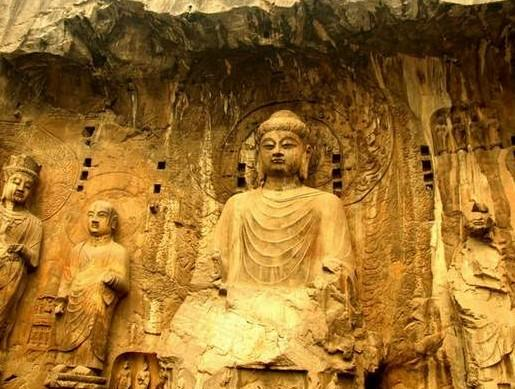
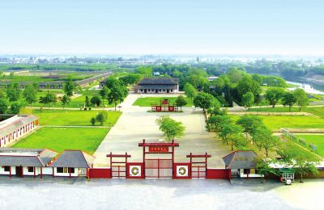

|  | 少林寺是中国佛教禅宗祖庭和中国功夫的发源地，现为世界文化遗产、全国重点文物保护单位、国家AAAAA级旅游景区，位于河南省郑州市登封市嵩山五乳峰下，因坐落于嵩山腹地少室山茂密丛林之中，故名"少林寺"。始建于北魏太和十九年(495年)，是孝文帝为了安置他所敬仰的印度高僧跋陀尊者， 在与都城洛阳相望的嵩山少室山北麓敕建而成。少林寺常住院占地面积约57600平方米。少林寺是世界著名的佛教寺院，是汉传佛教的禅宗祖庭，在中国佛教史上占有重要地位，被誉为"天下第一名刹"。 因其历代少林武僧潜心研创和不断发展的少林功夫而名扬天下，素有"天下功夫出少林，少林功夫甲天下"之说。 |
|  | 龙门石窟开凿于北魏孝文帝年间，之后历经东魏、西魏、北齐、隋、唐、五代、宋等朝代连续大规模营造达400余年之久，南北长达1公里，今存有窟龛2345个， 造像10万余尊，碑刻题记2800余品 。其中"龙门二十品"是书法魏碑精华，褚遂良所书的"伊阙佛龛之碑"则是初唐楷书艺术的典范。 龙门石窟延续时间长，跨越朝代多，以大量的实物形象和文字资料从不同侧面反映了中国古代政治、经济、宗教、文化等许多领域的发展变化， 对中国石窟艺术的创新与发展做出了重大贡献。2000年被联合国科教文组织列为世界文化遗产。 |
|  | 殷墟，古称“北蒙”，是中国商朝晚期都城遗址，位于河南省安阳市，殷墟是中国历史上第一个有文献可考、 并为考古学和甲骨文所证实的都城遗址，由殷墟王陵遗址、殷墟宫殿宗庙遗址、洹北商城遗址等构成。 在20世纪初，殷墟因发掘甲骨文而闻名于世，1928年正式开始考古发掘以来，殷墟出土了大量都城建筑遗址和以甲骨文、青铜器为代表的丰富的文化遗存， 系统展现了中国商代晚期辉煌灿烂的青铜文明，确立了殷商社会作为信史的科学地位。被评为20世纪中国“100项重大考古发现”之首。 自殷墟发现以来﹐先后出土有字甲骨约15万片。甲骨文中所记载的资料将中国有文字记载的可信历史提前到了商朝，也产生了一门新的学科——甲骨学。 1961年3月，国务院将殷墟列入首批全国重点文物保护单位。 2006年7月，殷墟被联合国科教文组织列入世界文化遗产名录。为国家AAAAA级旅游景区。 2017年3月，中国社科院考古研究所安阳考古站在殷墟宫殿区以东的大司空村进行考古发掘。18座保存完整的匈奴墓葬在殷墟大遗址保护区内的首次发现，丰富了殷墟文化的内涵。 |
(未完待续)